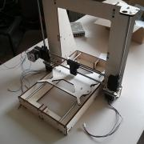

{% block content %}
{% filter markdown|typogrify -%}
Mit Hilfe von Geldern aus dem Programm „Zukunft und Innovation Niedersachsen“
des niedersächsischen Ministerium für Wirtschaft, Arbeit und Verkehr bieten wir
vorbehaltlich der endgültigen Bewilligung der Fördermittel in der Zeit vom
29. bis 31. Juli und in der Zeit vom 17. bis 18. Oktober in unseren
Vereinsräumen, dem FabLab Oldenburg „Fab-O-Lab”, eine Fortbildung für Lehrer
aus Niedersachsen an.
Im esten Teil der Summerschool bauen wir mit den Lehrern jeweils einen
3D-Drucker, den sie mit an Ihre Schulen nehmen und im Unterricht einsetzen
sollen. Im zweiten Teil geht es um die Technik des 3D-Scannens, das Modellieren
von 3D-Objekten am Computer, den Einsatz dieser Techniken im Unterricht und
natürlich um Erfahrungsberichte zu dem Einsatz der 3D-Drucker in den Schulen.

Wir haben uns für eine Weiterentwicklung des RepRap Mendel Prusa i3 aus Holz
entschieden, um den Selbstkostenanteil für die Schulen bzw. Lehrer gering zu
halten und den Aufbau zu erleichtern. Unsere Variante wird den Namen "JoSeb"
tragen, da sie quasi das Baby von Jonas und Sebastian ist.
Leider kam die Zusage zur Förderung trotz der Bewerbung Anfang Februar erst
Ende Mai und die Zeit zur Organisation war sehr knapp. Neben der Hardware und
den Referenten mussten so kurzfristig ja auch noch Lehrer gefunden werden, die
in den Sommer- und Herbstferien noch keinen kollidierenden Urlaub gebucht
hatten. Außerdem sind die kompletten Ausgaben durch den KtT vorzufinanzieren,
was laut Satzung nicht ohne außerordentliche Mitgliederversammlung ging...
Wir hatten bisher also eine Menge Klippen zu Umschiffen und Hürden zu nehmen -
aber es scheint tatsächlich alles zu klappen! In der kommenden Woche sollte die
endgültige Bewilligung eintreffen und die Finanzierung durch die Bank
bestätigt. Dann kann es auch endlich mit dem eigentlichen Workshop los gehen ;)
{%- endfilter %}
{% endblock content %}